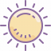

Ist der Fokus Mode aktiviert, siehst du auf YouTube keine ablenkenden Videoempfehlungen mehr.
Der Pomodoro Timer hilft dir bei der Planung deiner Arbeits- und Pausephasen. Nach 25 Minuten Arbeit solltest du 5 Minuten Pause machen, um wieder volle Konzentration zu haben.
25:00
Der Hydration Timer erinnert dich daran, nach einer Stunde ein Glas Wasser zu trinken. Der Timer startet wieder automatisch von vorne.
00:00
0%

Hier siehst du die aktuelle Temperatur bei dir und wann es das nächste Mal regnen soll.
Lade Temperatur...
Lade Regencountdown...
Zum DashboardDas Dashboard zeigt dir interessante Daten zu deinem Nutzungsverhalten des Chrome-Browsers.